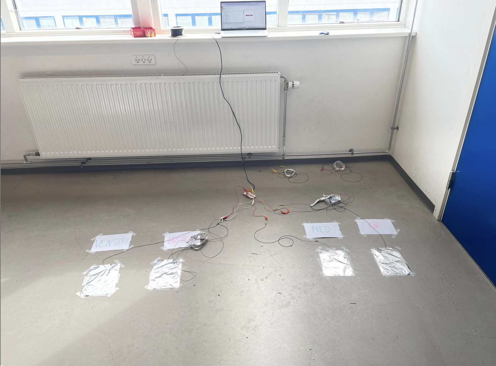
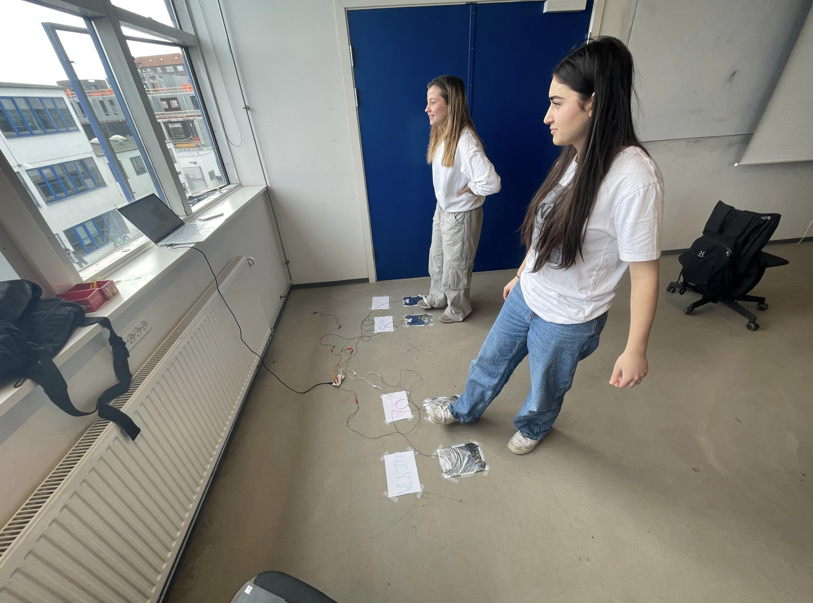
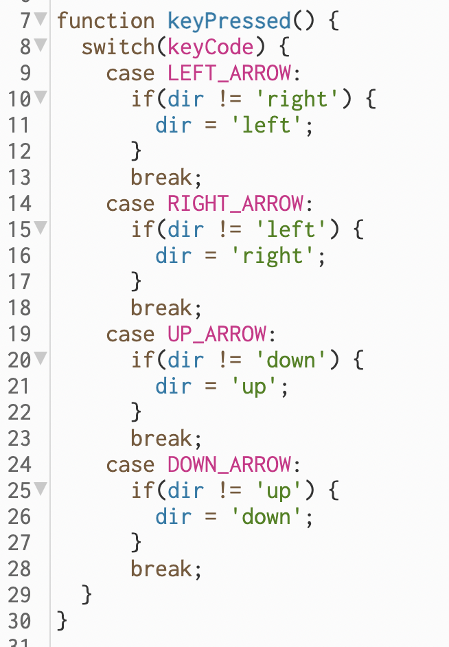
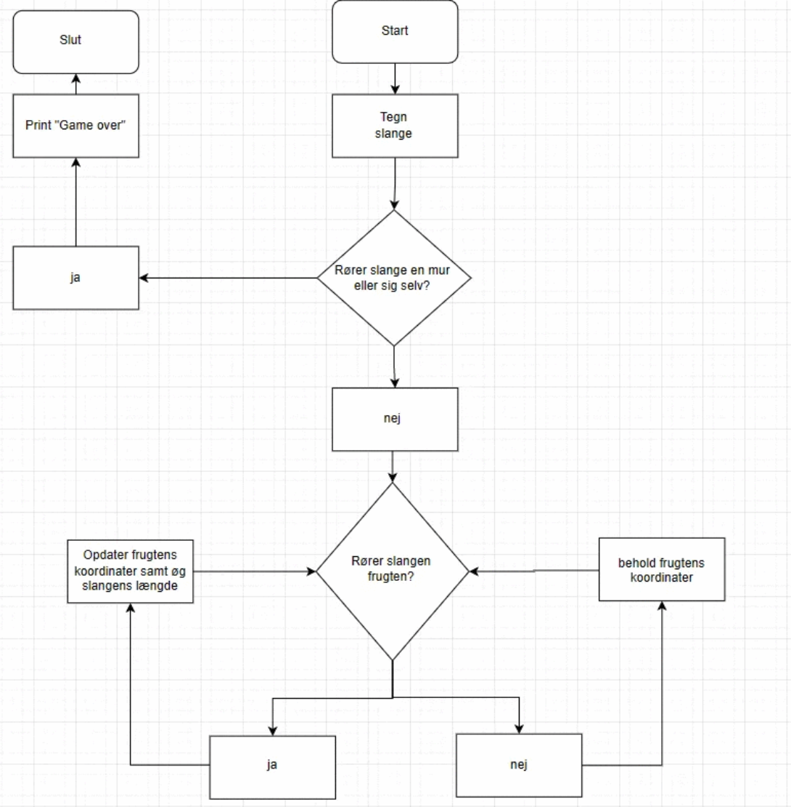

Vores spil
I spil og leg arbejdede vi med følgende case: "Dansk idrætsforbund er stærkt bekymret over en ny undersøgelse, der viser, at 3 ud af 4 børn og unge bevæger sig for lidt i hverdagen.
De mistænker at for meget stillesiddende skærmtid spiller en rolle og vil derfor gerne motivere unge mennesker til at bevæge sig mere og til at være mere sociale, når de spiller computerspil. Derfor har de besluttet sig for at udvikle et spil."
Vores opgave var altså at udvikle et spil som ville få unge mere aktive. Vi valgte at lave det kendte spil snake, hvor man i stedet for at bruge tastaturet skulle være to og to om at hoppe rundt på nogle pile på gulvet for at kunne dreje slangen.
Dette betød at vores brugere både skulle kommunikere med hinanden og samtidig også få
pulsen bare en smule op.
Hvis du selv føler for at prøve spillet så er der et link her, hvor man også har adgang til koden. Klik her
For den bedste spiloplevelse anbefaler vi at du tager fat på en i din familie eller en af dine venner) og sætter en MakeyMakey op til computeren også.
Biledere af spillet
Første billede til venstre viser selve setupet af vores spil. På gulvet ser man de tre sølvpapirs plader som funger som vores piletaster, ovenover dem står der deres korresponderende tast. Altså "Venstre", "Højre", "op" og "ned". På billedet til højre ses vores to skønne testpersoner Idil og Sara som er i gang med at spille vores spil. De var faktisk nogle af vores bedste testpersoner da de nåede længst i spillet.


Gennemgang af kodestykker
Det stykke kodestump man kan se lige nedenunder til venstre viser
hvordan snake reagerer på at man trykker på de forskellige piletaster.
Først laver man en function som hedder "KeyPressed".
Når man presser en piletast vil funktionen blive sat i gang og
følgende vil ske:
Linje 9: Hvis det er left-arrow key der bliver presset og snake ikke allerede drejer til højre,
så skal den ændre retning mod venstre. Derefter når der bliver skrevet "Break" skal den
stoppe med at få snake til at dreje til venstre altså skal den bare opretholde den kurs den
nu har sådan så man senere kan dreje snake igen uden den konsekvent drejer til venstre.
Det samme er gældende for alle de andre arrowkeys, bare med den ændring at hvis
slangen allerede kører den modsatte retning af hvad end man vil
have den til at dreje så kan den ikke.

Nedenunder til højre ser du koden som var den der fik vores snake til at kunne dø. Ved linje 57 ser man at vi
laver en function som vi kalder deathloop. Linje 58 sætter variablen til i=0 og tjekker derefter
hvorvidt i er større end en anden variable som er numsegment, numsegment er desuden
længden på vores slange, hvis den er det skal der ligges 1 til i, dette bliver altså til punktet lige
foran slangen. Derefter kører den et if statement. Den siger at hvis det i'te y-kordinat på slangen
er mindre end en 1 eller større end 400 så skal den kører funktionen death.
Det samme kommer itl at gælde for x-kordinatterne (se linje 63). Ved linje 66 siger at hvis det 0'te
x-kordinat er ligmed det i'te x-kordinat+2 og det samme er gældende for y-kordinattet så skal den
også kører funktionen death. Med andre ord = røre slangens hoved sig selv skal den kører
funktionen death.
Function death
Ved function death ser vi at den første linje siger den skal tegne en rektangel som fylder hele
skærmen og den så derefter skal skrive "Game over" ovenpå. Til sidst siger den noloop - altså skal
den ikke kører denne funktion igen og man har hermed tabt spillet.

Flowchart over Snakes bevægelse

Ovenover ser man et flowchart der viser hvordan programmet fungerer når snake bevæger sig. Først tegner den slangen for så derefter at spørge om slangen rør sig selv eller muren, gør den ikke det skal den fortsætte til at spørge om den spiser en frugt. Hvis dette er tilfældet skal den gøre slangen en længerer, og hvis den ikke gør det skal beholde frugtens kordinat.
Forslag til forbedringer
Til slut i forløbet efter vores spil var blevet testet lavede vi en brugerundersøgelse for at finde ud af hvad vi kunne forbedre ved vores spil. Vi fik følgende forslag:
1. Større skærm så det var nemmere at se snake
2. Forskellige sværhedsgrader så man kunne ændre tempoet på snake.
3. Et point system så man kan se hvor mange frugter man har spist og dermed lave konkurrence mellem sine venner.